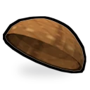

Leather
Leather is a common material. Cured hide, mostly off zombies. Used for leather gear and to back metal armor.
Item sources
| Source | Quantity | Rarity | Notes |
|---|---|---|---|
| Desert Worm | 2–4 | 1/2 | |
| Scrap Warlord | 2–4 | 30% | |
| Garbage Man | 1–3 | 1/4 | |
| Sand Zombie | 1–2 | 1/4 | |
| Cyclops | 2–3 | 1/5 | |
| Super Zombie | 2–4 | 1/5 | |
| Raider | 1–2 | 1/6 | |
| Wormling | 1–2 | 1/6 | |
| Zombie | 1–2 | 15% | |
| Bandit | 1–2 | 1/10 | |
| Cave Spider | 1–2 | 1/11 | |
| Squirrel | 1 | 1/25 | |
| Tier 1 Endless chest | 6–12 | 10% of its rows | Chest |
| Tier 2 Endless chest | 8–14 | 5% of its rows | Chest |
| Greenshore Fields chests | 2–4 | 30% of its extra row | Endless Dungeon |
| The Dump chests | 2–4 | 15% of its extra row | Endless Dungeon |
| Dust Bowl chests | 3–5 | 20% of its extra row | Endless Dungeon |
Uses
| Makes | Takes | Level | Notes |
|---|---|---|---|
 Rough Leather Rough Leather | 25 | 10 | |
 Leather Cap | 5 | 1 | |
 Leather Tunic Leather Tunic | 10 | 1 | |
 Iron Armor Iron Armor | 10 | 1 | |
 Mithril Armor Mithril Armor | 10 | 10 | |
 Slime Bag Slime Bag | 4 | 30 | |
 Provisions Pouch ×2 Provisions Pouch ×2 | 5 | 15 | |
 Bandage Roll ×2 Bandage Roll ×2 | 4 | 20 | |
 Fields Chart ×2 Fields Chart ×2 | 4 | 25 | Cartographer's Table |
 Bowl Chart ×2 Bowl Chart ×2 | 4 | 25 | Cartographer's Table |
Repair Station
The Repair Station mends these with it:
 Shooty's Hat
Shooty's HatNotes
Not written yet
When Leather is worth getting, and what to do with it.
Gallery
Not written yet
No pictures yet: renders, models and animations go here.
Trivia
Not written yet
Anything else worth knowing.
Changes
Not written yet
What changed for Leather, update by update.